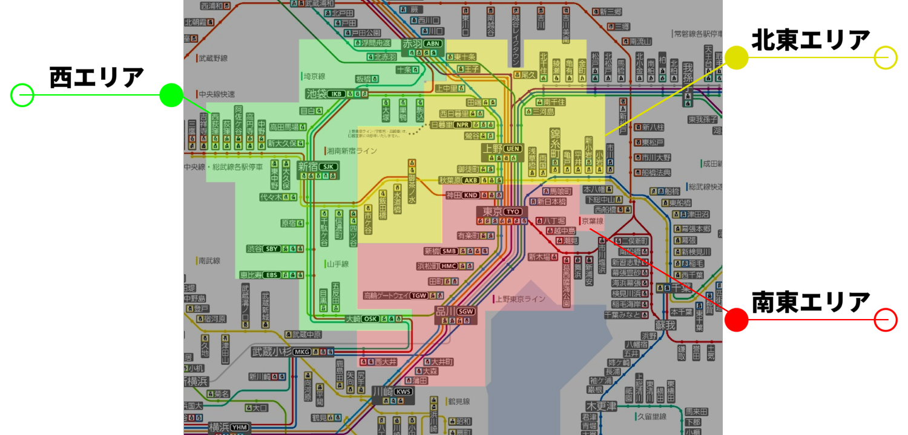

ゲームルール
電鬼アプリの使い方
外部のWebサイトに遷移します
-
基本ルール
・東京都区内（都区内パスの有効範囲）で鬼ごっこを実施します。
・1～5名のチーム単位でスコアを競います。
・鬼にタッチされたら役交代（代わり鬼）。
・徒歩・鉄道（都区内パス利用）で移動します。 -
進行方法
・Webアプリ「電鬼」とDiscordを利用してゲームを進行します。
・ゲーム中は「電鬼」および運営からの指示に従ってください。 -
エリア分け
・参加チームを3つのエリアに分けてゲームを実施します。
・西エリア：新宿・渋谷・池袋周辺
・北東エリア：上野・浅草・錦糸町周辺
・南東エリア：東京・品川・有楽町周辺
・午前中（10:15～12:00）は各エリア内でゲームを行います。
・午後（12:00～16:00）は全エリア統合で東京23区全体でゲームを行います。 -
ミッション
・ゲーム中にWebアプリを通してミッションが不定期に発令されます。
・主なミッションは「位置情報の共有」「指定場所での写真撮影」などです。
・難易度や提出の早さによってスコアが変動します。 -
スコア制
・ミッション提出や鬼タッチなど、様々な行動がスコアに反映されます。
・例：位置情報提出で10点加点、鬼が逃走チームにタッチで100点加点、鬼にタッチされたら100点減点など。
・ゲーム終了時のスコアが高いチームが優勝です。 -
特別カード
・特別カードを使うことで一部のルールが一時的に緩和されます。
・例：「無敵カード」…使用後5分経過から15分間、鬼にタッチされても無効（1回使用可能）
・例：「隠れ身の術カード」…30分間、自チームの位置情報が非公開（3回使用可能） -
服装・持ち物
・長時間歩くため、歩きやすい靴・動きやすい服装でご参加ください。
・参加者識別のため、配布するチームカラーの帽子を常時着用してください。
・帽子は集合時に配布します。 -
禁止事項
・歩きスマホ、混雑場所や屋内でのダッシュ、体調不良での参加、範囲外への移動、その他迷惑行為は禁止です。
・駅構内、電車内で走って逃げるのは大変危険ですのでおやめ下さい
・線路内や立ち入り禁止の場所はミッションの範囲に含まれませんので絶対に立ち入らないで下さい
・安全第一でご参加ください。

※詳細なルールやスコア計算方法は当日説明します。不明点はスタッフまで。